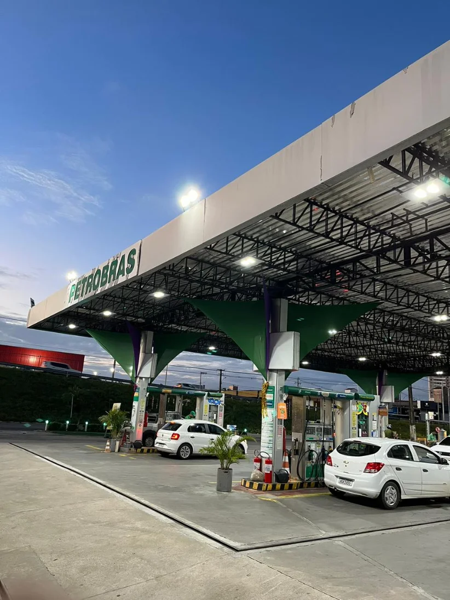
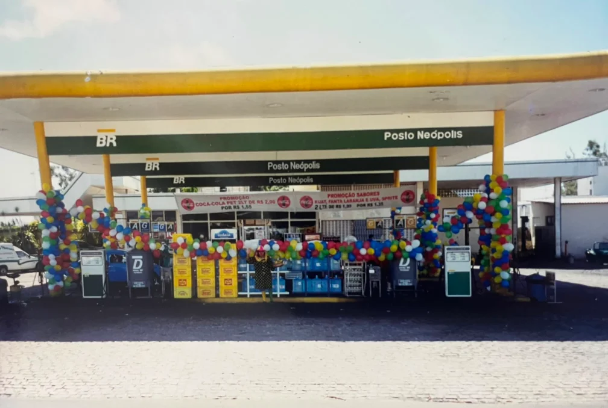
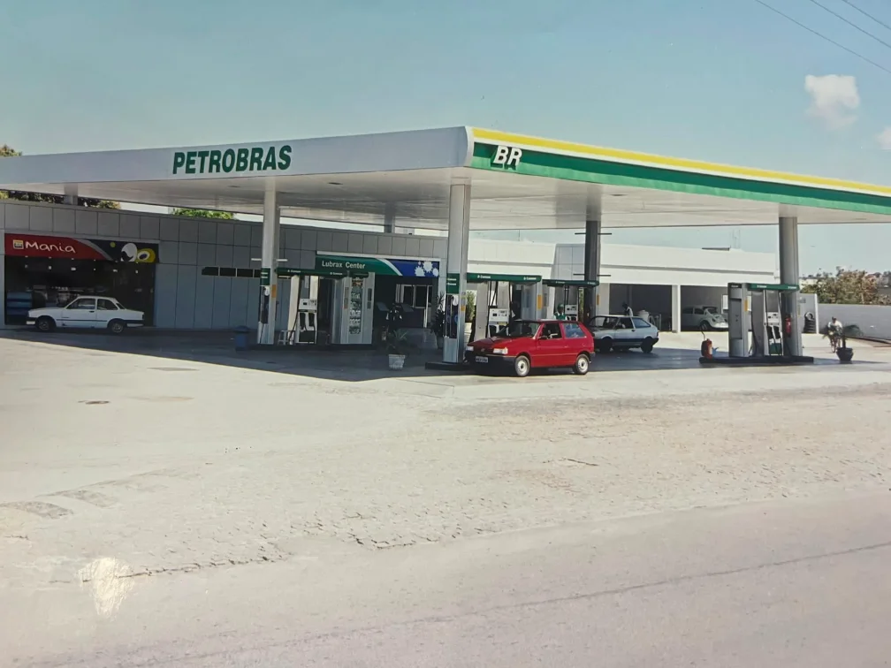

Nossa história
Um posto que é tradição em Natal




A história do Posto Neópolis nasceu de uma experiência vivida de perto e de uma paixão pelo setor de combustíveis.
Antes de adquirir o posto, nosso fundador já trabalhava no segmento e conhecia, na prática, os desafios e as oportunidades desse mercado. Foi justamente essa experiência que fez surgir a visão de que um posto de combustíveis poderia ser muito mais do que um simples ponto de abastecimento: poderia ser um negócio construído com dedicação, qualidade e relacionamento com seus clientes.
Naquele período, o posto já operava com a bandeira Petrobras. A aquisição manteve essa parceria, que foi sendo renovada ao longo dos anos, acompanhando a evolução do negócio e fortalecendo seu compromisso com a qualidade e a confiança.
Ao longo dos anos, o Posto Neópolis passou por transformações, mas manteve aquilo que esteve presente desde o início: a vontade de oferecer um bom serviço, trabalhar com seriedade e construir uma relação de confiança com cada cliente.
Hoje, o Posto Neópolis carrega uma história construída com trabalho, dedicação e visão de futuro. Uma história que começou com uma oportunidade e se transformou em um compromisso diário com nossos clientes, nossa equipe e nossa cidade.
Posto Neópolis — uma história construída com trabalho, confiança e paixão pelo que fazemos.
Missão
Proporcionar um atendimento de excelência aos nossos clientes, parceiros e amigos, oferecendo todos os serviços disponíveis no posto e demonstrando, em cada atendimento, que o Posto Neópolis se importa genuinamente com cada veículo e com cada pessoa que por aqui passa.
Visão
Expandir o Posto Neópolis e seus serviços para novos pontos da cidade e/ou região até 2030, mantendo a excelência no atendimento, elevando continuamente a qualidade dos serviços e fortalecendo, cada vez mais, a parceria com todos que confiam e abastecem conosco.
Valores
- 01O cliente sempre em primeiro lugar
- 02Atendimento de excelência como compromisso diário
- 03Ética e responsabilidade em todas as decisões
- 04Produtos e combustíveis de alta qualidade, sem exceção
- 05Espírito de família NPL, com união, respeito e parceria